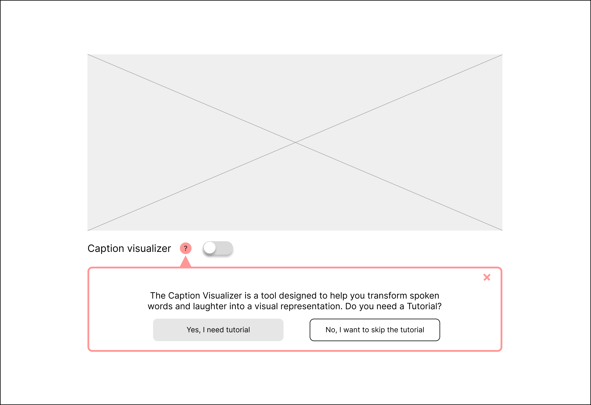

Enable the Sound Visualizer for an immersive video experience
Sound Visualizer
reflection
Project Purpose
A sound visualizer that generates shapes of varying sizes corresponding to sound volume levels. It aims to enhance traditional video captions for a more engaging watching experience.
Responsive for any screen sizes larger than 375 px
Information to convey
While captions aid video accessibility, they're limited to text-based information. Language alone conveys basic content, leaving out other factors like speech volume and background music.
Color can captivate people and evoke emotions. Hence, I intend to overcome caption limitations through visual representation.
How is it interesting?
Sound visualizer is an uncommon feature on most video platforms, making it an innovative approach to video platforms and sound visualization.
Target Audience
Individuals watching sound-enabled videos on devices capable of sound input. Potential target users would also include individuals with hearing difficulties. although more research is needed on their video-watching experience.
Implication
The sound visualizer could be useful in videos with minimal speech or with factors beyond the content (e.g. a stand-up comedy show where the laughter complements the content). Incorporating a sound classification model within this visualizer, distinguishing between laughter and speech, would enrich the video experience.
- Click on the toggle button to activate the sound visualizer
- Click on the color selector to change the color of the shape
- Make sounds of different volumes to see visual representations on the screen
- Say “one” “two” or “three” to see visual representations on the screen (extend the sound if not working).
- Click on the toggle button to deactivate the feature
While determining the volume breakpoint for various sizes of shapes, I experimented with several options in the environment where I planned to do a live demonstration for this class (i.e. Wean Hall 5310).
I utilized P5.js and its sound library (specifically the Mic threshold example) for fundamental functionality, along with a speech recognition model for sound classification. I integrated them by running speech recognition first and adding conditions in the visualizer’s JavaScript to display if recognized. Therefore, the system visualizes sound using basic shapes unless it identifies speech.
Challenge 1
Due to the system’s running time versus the brevity of input sound, it is tricky to control the timing of sending the result of sound classification to the function that handles visualization, resulting in lag or mismatches during speech display.
Solution
I logged in to the console to check the timing of three moments: 1. The model detects a speech to be displayed and stores it as a variable, 2. The visualizer receives this variable 3. The visualizer draws it in the background.
Challenge 2
False positives (where the model mistakenly recognizes speech as the intended target when it is not) would interupt the video-watching experience.
Solution
To reduce false positives, I limited recognized speech to only "one," "two," and "three," as these are more likely to frequently appear in videos.
The warning and logged information in the console comes from the sound classification package.
Changes in tutorial flow:
Before: The initial design had a tutorial to explain how the system works
After: On a video platform, users prioritize watching content and are less inclined to go through tutorials. To address this, I integrated instructions within the feature flow rather than presenting them separately.
Changes in where to display visualization:
As the goal is to create a more immersive video-watching experience, I chose the third option as the final design based on results from 3 interviews with CMU MHCI students.